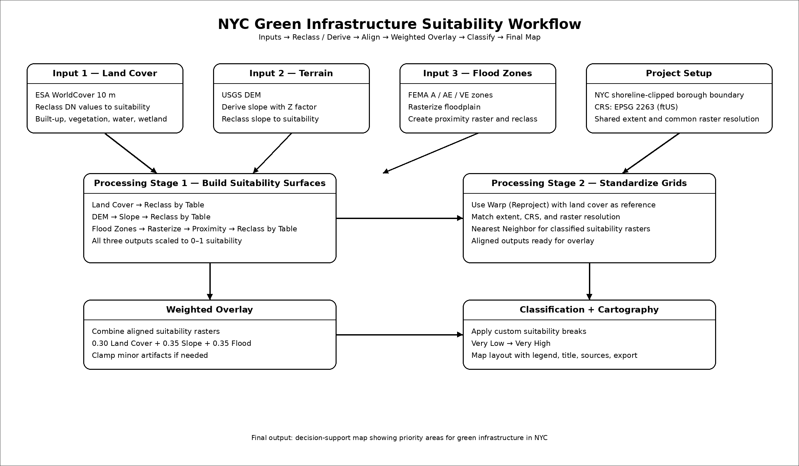
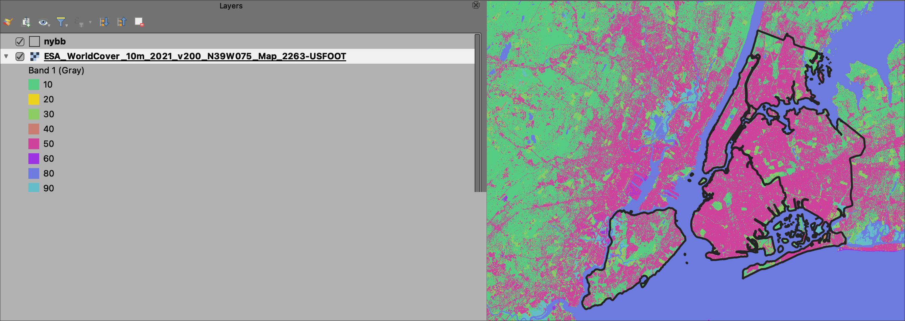
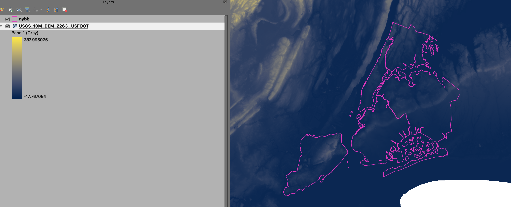
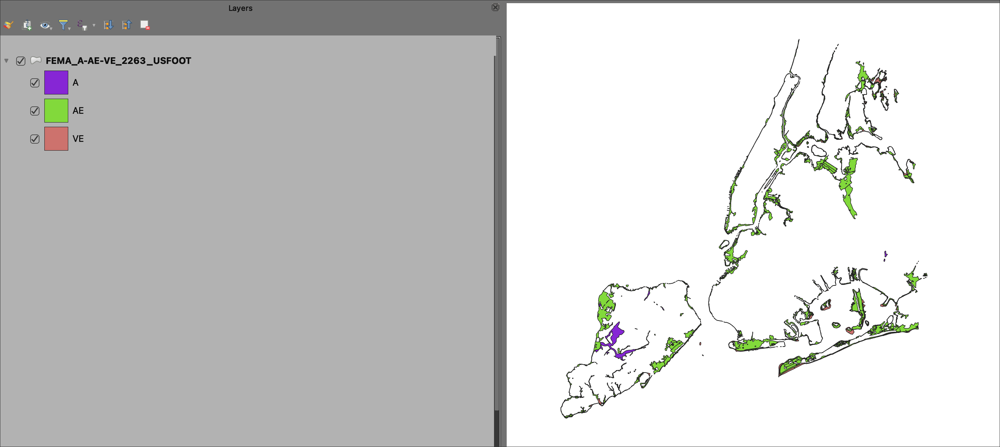
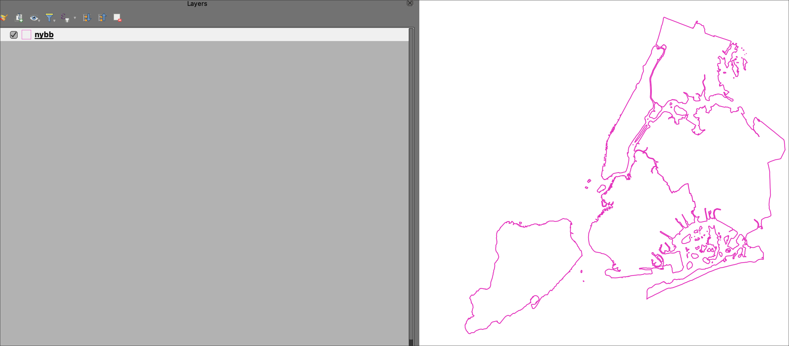
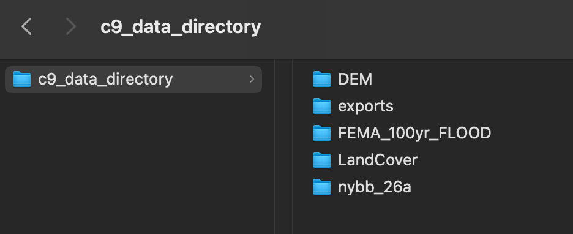
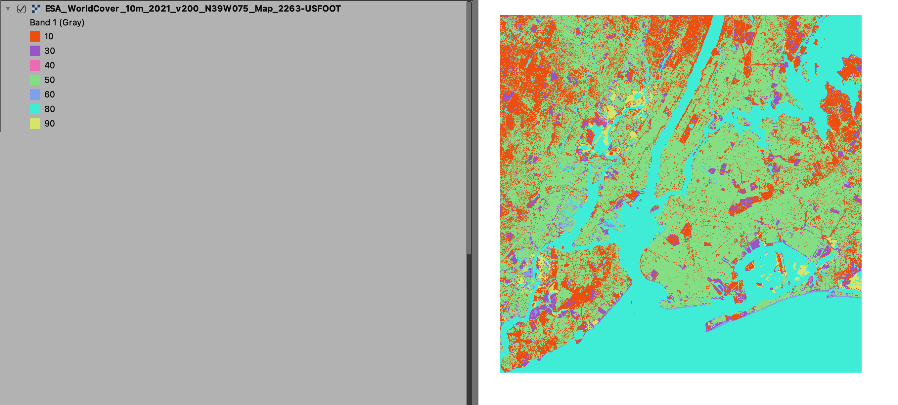
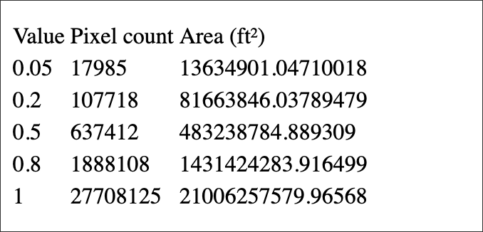
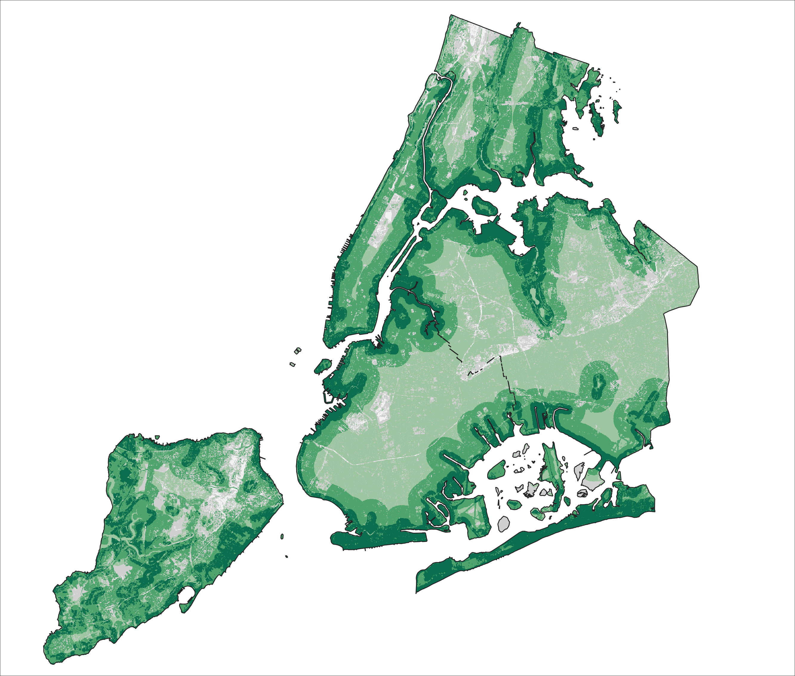

Class 9 Assignment: Spatial Analysis of Raster Data + Suitability Model
Fall 2025 | NINT5380 - CRN2189

Preamble
This week’s Class 9 assignment will feature raster geoprocessing within a larger suitability model focused on New York City. Here we aim to identify areas most suitable for green infrastructure interventions (e.g., bioswales, rain gardens, permeable surfaces) that can help mitigate stormwater runoff and reduce flooding risk in a dense urban environment.
The assignment integrates multiple raster inputs that represent both the built and natural environment, including land cover (as a proxy for impervious surface), terrain (slope derived from elevation), and flood exposure. These variables will be standardized and combined into a single suitability surface to identify priority intervention areas.
The assignment features several sections as follows:
Preparation and alignment of raster datasets at a common resolution and extent.
Reclassification and normalization of land cover, slope, and flood exposure layers.
Development of suitability criteria for each environmental variable.
Application of weighted overlay using raster calculator.
Creation of a final combined suitability surface.
Classification and identification of ‘Most Suitable’ locations.
Cartographic design for the final green infrastructure suitability map.
Class 9 Recorded Lecture:
Before proceeding with assignment steps below, review the posted lecture slides + lecture recording for an overview of this week’s concepts and themes.
Class 9 Readings:
The NYC Department of Environmental Protection’s Green Infrastructure Annual Report (2024) provides an overview of how the city is implementing strategies to manage stormwater and reduce flooding through interventions such as bioswales, permeable surfaces, and green streets. This report will be the featured reading for next week’s reading quiz.
The report highlights how impervious surfaces, terrain, and flood-prone areas shape where these interventions are most needed. This context is essential for understanding how GIS-based suitability modeling can support real-world infrastructure planning decisions in NYC:
🧠 Key Concepts from the Reading
- Urban areas generate excess stormwater runoff due to impervious surfaces
- Green infrastructure (GI) reduces runoff through infiltration, storage, and evapotranspiration
- GI placement must consider:
- Built environment intensity
- Terrain constraints
- Flood risk exposure
- Built environment intensity
- Suitability modeling helps identify priority intervention zones
Supplemental readings (not featured on Quiz):
Finding Suitable Locations | Chapter 2 (Suitability Overview)
What is Map Algebra?
Raster Calculator Overview
Raster Calculator Appendix - Map Algebra
🗺️ Project Overview
In this assignment, you will build a raster-based suitability model to identify:
Where should NYC prioritize green infrastructure investments to reduce stormwater runoff and flooding risk?
In this assignment, the core processing steps include:
- Construct raster layers (Approximately ~10 m resolution)
- Normalize variables to a common scale
- Align raster layers for overlay analysis
- Combine layers using a weighted overlay
- Produce a final suitability map
Data:
Location of Class 9 suitability inputs for download
All inputs have been reprojected to NYC’s local coordinate system (EPSG: 2263). Further, the raster products have also been clipped to the extents of the NYC 5 borough boundary. The raster products are all at, or near, the 10 meter pixel resolution.

🧭 Part I — Data Acquisition & Setup
Step A — Download Land Cover (10 m)
- Dataset: ESA LandCover 10m
Download tile(s) covering NYC - Located in the suitability data directory.
The following youtube video is a brief yet valuable overview of the ESA LandCover Dataset - Video Overview

Step B — Download DEM (~10 m)
- Dataset: 3DEP DEM
Download 1/3 arc-second DEM (~10 m resolution) - Located in the suitability data directory. Keep in mind that the height unit of each pixel is also in meters; i.e. meters relative to sea level.

Step C — Download Flood Zones
Download County GIS dataset - Located in the suitability data directory. From the original data, only three (3) flood zone designations have been extracted as noted in the following table.
| Zone | Risk | Notes |
|---|---|---|
| A | High | 100-year floodplain |
| AE | High | 100-year floodplain (elevation defined) |
| VE | High | Coastal flood zone (wave action) |

Step D — Download NYC Borough Boundary Dataset
It is advisable to dissolve this feature early in the project for use as raster extents, raster clips, ect. This layer operates as the project extent for raster processing.

Step E — Clip All Data to NYC Boundary
This step has already been done for the download dataset. We want to make sure the following conditions are met before proceeding to the project analysis steps.
- Ensure all layers share:
- Same CRS - 2263
- Same extent - NY Borough Boundary
- Raster data is at or close to the 10m resolution size
Final alignment will happen at the end of the assignment steps; however, early in a suitability model its valuable to consider identical or very similar extents and raster cell resolutions. This adds integrity to the model ensuring limited overshoots in extent and resolution.
Step F — Reproject Raster Inputs to the common CRS
This steps has already been done for the download dataset. For the reprojection step we use the following methods depending on the data type:
- Categorical → Nearest Neighbor
- Continuous → Bilinear

- DEM → Digital Elevation Model used for Slope Calculations (RASTER)
- FEMA 100-year Flood → Flood extents in NYC region (VECTOR)
- LandCover → ESA LandCover categorical data (RASTER)
- nybb_26a → NYC Borough Boundary (VECTOR)
- exports → Location for assignment outputs + backup data in case of QGIS fatal errors while processing
In the exports directory there is backup > aligned; these are processed layers in case QGIS returns fatal processing errors in assignment steps. Only use these layers as last result.
🌍 Part II — Land Cover Suitability Surface
Step A — Reclassify Land Cover import the layer ESA_WorldCover_10m_2021_v200_N39W075_Map_2263_USFOOT. This is the ESA LandCover dataset. Note the following table LandCover DN and descriptions:
| DN Value | Land Cover Class | Description |
|---|---|---|
| 10 | Trees | Areas dominated by tree cover |
| 30 | Grassland | Herbaceous vegetation (grasses) |
| 40 | Cropland | Agricultural areas |
| 50 | Built-up | Urban / impervious surfaces |
| 60 | Bare / Sparse Vegetation | Little to no vegetation cover |
| 80 | Permanent Water Bodies | Rivers, lakes, reservoirs |
| 90 | Herbaceous Wetland | Wetlands with herbaceous vegetation |

Step B — Reclassify Land Cover
Utilize Reclass by Table based on the following rationale; use the schema to follow for the table parameters.
| DN | Land Cover | Suitability | Reason |
|---|---|---|---|
| 10 | Trees | 0.3 | Already provides ecological benefits (interception, infiltration) |
| 30 | Grassland | 0.6 | Moderate infiltration potential, some GI benefit |
| 40 | Cropland | 0.6 | Semi-pervious, moderate opportunity for GI |
| 50 | Built-up | 0.8 | Impervious surface, highest need for stormwater mitigation |
| 60 | Bare/Sparse | 0.5 | Some infiltration possible, moderate intervention potential |
| 80 | Water | 0.0 | Not suitable for GI placement |
| 90 | Wetland | 0.2 | Already functioning as natural water management system |
Formatted Reclass Table:
To start, create seven (7) empty rows via Add Row in the Reclassify by table tool. Populate as follows:
| From | To | Output |
|---|---|---|
| 10 | 10 | 0.3 |
| 30 | 30 | 0.65 |
| 40 | 40 | 0.6 |
| 50 | 50 | 0.8 |
| 60 | 60 | 0.5 |
| 80 | 80 | 0.0 |
| 90 | 90 | 0.2 |
Because land cover values are discrete (exact DN values), use min ≤ value ≤ max with identical From and To values (e.g., 10–10). This ensures each class is reclassified correctly without overlap.
Step C — Save Output
- Make sure to create an
Exportsdirectory folder for the various outputs that will be produced leading to the suitability ranking.
- Export as
landcover_suitability_10min the GeoTiff format. this will add the suffix.tifto the layer name.
🏔️ Part III — DEM & Slope Suitability
Step A — Load DEM
- Ensure that the raster layer
USGS_10M_DEM_2263_USFOOTis loaded to the layers panel.
Step B — Derive Slope
- Apply the default Raster Terrain Analysis > Slope toolset
Because the DEM elevation values are in originally in unit meters and the project CRS (EPSG:2263) uses unit US feet, apply a Z factor of 3.28084 when calculating slope. This converts vertical units meters to match horizontal units US feet and ensures accurate slope values are returned in the slope raster.
- Run the tool and accept the result as a temporary
Slopelayer, ready for the next step below.
Step C — Reclassify Slope
The Slope layer now receives a reclassification of the slope values using the same Reclassify by table toolset as does the Land Cover.
The reclassification logic is as follows:
| Slope (°) | Suitability | Reason |
|---|---|---|
| 0–5 | 1.0 | Flat areas ideal for infiltration and GI installation |
| 5–10 | 0.8 | Slight slope, still highly suitable |
| 10–20 | 0.5 | Moderate slope, reduced feasibility |
| 20–35 | 0.2 | Steep terrain, limited GI potential |
| >35 | 0.05 | Very steep (e.g., Hudson Palisades), not practical for GI |
Formatted Reclass Table:
To start, create seven (5) empty rows via Add Row in the Reclassify by table tool. Populate as follows:
| From | To | Output |
|---|---|---|
| 0 | 5 | 1.0 |
| 5.0000001 | 10 | 0.8 |
| 10.0000001 | 20 | 0.5 |
| 20.0000001 | 35 | 0.2 |
| 35.0000001 | 90 | 0.05 |
✔ Output type: Float32
✔ Range: min ≤ value ≤ max
✔ Upper bound (90) safely captures all values
✔ Because slope values are continuous and stored as floating point numbers, values near class boundaries (e.g., 5°) may not fall exactly on those thresholds. Using very small offsets (e.g., 5.000001 instead of 5.0001) helps avoid gaps where values would otherwise not be assigned to any class.
Sanity Check: we can run the Raster layer unique values report toolset on the slope raster to ensure we have only cells that meet our assigned Output Values. This produces an .html overview that we can review easily; run as a temporary file and close after viewing. Our values should be limited to our chosen Output values; no pixel values should ‘stray’ from the strict reclassification scheme.

Step D — Save Output
- Export as
slope_suitability_10m
🌊 Part IV — Flood Distance Suitability
Step A — Select Flood Zones
- Ensure that the vector layer
FEMA_A-AE-VE_2263_USFOOTis loaded to the layers panel.
This layer has been clipped to just land within the brough boundary file. However, we must convert to raster format before creating a Proximity Distance Raster.
Step B — Rasterize the FEMA Flood Zones
- Enact the tool Raster > Conversion > Rasterize
In this step, the vector features will be rasterized in preparation for a Euclidean Distance output which is a Global processing function:
To Start, input the FEMA_A-AE-VE_2263_USFOOT and populate the Rasterize tool with the following parameters:
1as the A fixed value to burn- Geoferenced units as the Output raster size units
27.007as both Width/Horizontal resolution and Height/Vertical resolution (this is close to the measurement of 10 meters and importantly is the same as the LandCover raster which will operate as the ‘match’ layer further on in the assignment steps)- Output extent =
nybb(choose boundary at far right of dialog box) - nodata set to
Not set - save to temporary file; default name will be
Rasterized
When setting raster resolution, small rounding (e.g., 27.007 instead of long decimal values) is acceptable and can improve stability. Extremely precise floating values may introduce alignment or processing issues without improving analysis accuracy.
Step C — Create Distance Raster
Using
Rasterizedas the input, navigate to the Raster Analysis > Proximity (Raster Distance) toolsetGenerate proximity raster (units = feet; Choose Georeferenced coordinates)
Set target pixels to value
1Accept all other defaults
Save to temporary file; default name will be
Proximity map
Step D - Reclass Distance Raster
Use the following logic and table schema to accomplish the table reclass as follows.
- Follow the tool path: Raster analysis > Reclassify by table
The reclassification logic is as follows:
| Distance to Flood Zone (ft) | Suitability | Reason |
|---|---|---|
| 0–500 | 1.0 | Very close to high-risk flood zones; highest priority for GI intervention |
| 500–1,000 | 0.8 | Still near flood-prone areas and likely to benefit from runoff mitigation |
| 1,000–2,000 | 0.6 | Moderately connected to flood exposure; suitable but lower priority |
| 2,000–4,000 | 0.4 | More distant from mapped flood risk; limited direct flood mitigation benefit |
| >4,000 | 0.2 | Far from high-risk flood zones; lowest flood-related priority for intervention |
Formatted Reclass Table:
| From | To | Suitability |
|---|---|---|
| 0 | 500 | 1.0 |
| 500.0001 | 1000 | 0.8 |
| 1000.0001 | 2000 | 0.6 |
| 2000.0001 | 4000 | 0.4 |
| 4000.0001 | 999999 | 0.2 |
✔ Output type: Float32
✔ Range: min ≤ value ≤ max
Step E — Save Output
- Export as
flood_suitability_10m
🧩 Part V — Align Raster Grids (Warp Method)
Step A — Select a Reference Raster
At this juncture in the assignment steps, we should have three reclassed suitability layers ready for final alignment, leading to the suitability combine.
Choose one raster to define the target grid (recommended: land cover suitability raster). This raster will determine:
- extent
- resolution
- pixel alignment
Step B — Open Warp (Reproject) Tool
Navigate to:
Raster → Projections → Raster > Projections > Warp (Reproject)
(or Processing Toolbox → search “Warp”)
Step C — Set Input Raster
Select one raster to align (slope suitability raster, to start).
Step D — Set Target CRS
Set: - Target CRS → EPSG:2263 (NAD83 / New York Long Island, US Feet)
Step E — Match Resolution
Set: - Output file resolution → match your reference raster
- Make sure to use 27.007 which is the resolution of the LandCover Raster
Step F — Match Extent
Under Output extent:
- Click the dropdown → Calculate from Layer
- Select your reference raster (LandCover Raster)
This ensures identical spatial coverage.
Step H — Set Resampling Method
Because rasters are now classified suitability layers, not composed of continuous values:
- Use Nearest Neighbor
Step I — Set Output
Choose: - Temporary Layer (faster), OR
- Save to file (e.g., slope_aligned.tif)
Step J — Run Tool
Execute the tool.
Step K — Repeat for All Rasters except the reference layer (land cover)
Repeat Steps C–J for:
- flood distance suitability raster
All rasters must be aligned to the same reference grid.
Step L — Verify Alignment
Zoom into the map and toggle layers on/off:
- pixel edges should line up exactly
- no visible offsets between rasters
Aligned rasters are now ready for final Raster Calculator combination.
🧮 Part VI — Weighted Overlay
Step A — Confirm Inputs
All rasters scaled 0–1 ALL rasters aligned
Step B — Apply Equation via Raster Calculator
The final suitability surface is calculated as a weighted combination of normalized inputs:
\[ \text{Suitability} = 0.30(\text{Land Cover}) + 0.35(\text{Slope}) + 0.35(\text{Flood}) \]
- Drop-in equation for Raster Calculator; ensure layer names match your project naming conventions to avoid Invalid Expression error:
(0.30 * "landcover@1") +(0.35 * "slope@1") +(0.35 * "flood@1")
Step C — Clip Suitability to NYC Borough Boundary
Before final classification, clip the suitability raster result to the NYC borough boundary. First Dissolve the borough boundary; use the dissolved result as the Mask layer:
Navigate to Raster > Raster Extraction > Clip Raster by Mask Layer
Input Layer > Suitability Raster
Mask Layer > Dissolved borough boundary
Save to file (e.g.,
suitability.tif)
🗂️ Part VII — Apply Suitability Classification Scheme
In this step, the continuous suitability surface is translated into discrete classes for interpretation and cartographic design. Classification thresholds are based on the observed distribution of values within the NYC study area, with particular attention to clustering patterns and upper-tier suitability.
Step A — Review Value Distribution
Inspection of raster values reveals several key clusters:
- ~0.50–0.60 → dominant mid-range values
- ~0.65–0.70 → transitional band
- ~0.70–0.80 → strong suitability cluster
- ~0.80–0.94 → high-value upper tier
These clusters inform break placement to ensure meaningful separation between moderate and high suitability.
Step B — Define Classification Scheme
Apply the following classification breaks:
| Value | Label | Color (HEX) |
|---|---|---|
| 0.45 | Very Low | #F2F2F2 |
| 0.60 | Low | #CFCFCF |
| 0.70 | Moderate | #9EC5A1 |
| 0.82 | High | #4FA36C |
| 0.94 | Very High | #0B6E4F |
These thresholds are designed to:
- separate dominant mid-range values from higher suitability areas
- prevent over-classification of moderate zones
- isolate the most strategic intervention areas in the highest class
Step C — Apply Symbology in QGIS
In the Layer Styling Panel:
- Render type → Singleband pseudocolor
- Interpolation → Discrete
Click Classify, then manually replace values with the breakpoints above.
Assign colors using the HEX values provided.
Step D — Interpret Classification
Each class reflects increasing alignment between:
- impervious surface opportunity
- terrain feasibility (slope)
- flood exposure (moderated influence)
| Class | Interpretation |
|---|---|
| Very Low | Minimal suitability |
| Low | Limited potential |
| Moderate | Conditional suitability |
| High | Strong candidates |
| Very High | Priority intervention zones |
The Very High class is intentionally constrained to represent only the most optimal locations, rather than broadly capturing all suitable areas.
Step E — Cartographic Considerations
- Use a sequential gray → green ramp to reinforce suitability progression
- Ensure darkest tone = highest suitability
- Avoid gradient interpolation; maintain discrete class breaks
- Verify legend labels clearly reflect classification thresholds
This classification provides a balanced and interpretable representation of suitability across NYC.
🗺️ Part VIII — Map Layout & Final Deliverable
This final step translates your raster suitability model into a clear and compelling cartographic product. The goal is to communicate where the most suitable locations exist in NYC for green infrastructure intervention, based on land cover, slope, and flood exposure.
Step A — Establish Map Composition
Use your classified suitability raster (Part VII) as the primary thematic layer.
- Apply discrete symbology (no gradient interpolation)
- Use the defined 5-class classification + color ramp
Step B — Configure Layout Format
Create a final layout using:
- 11” × 17” (recommended) or
- 8.5” × 11” (portrait or landscape)
Set export resolution to:
- 300 DPI
Step D — Add Required Map Elements
Your layout must include:
Main Map Frame
- NYC study area
- Classified suitability raster
- NYC study area
Map Title
- Clearly communicates the analysis
- Example: Green Infrastructure Suitability — New York City
- Clearly communicates the analysis
Legend
- Includes all five classes:
- Very Low
- Low
- Moderate
- High
- Very High
- Very Low
- Uses your defined color ramp
- Ordered low → high
- Includes all five classes:
Scale Bar + North Arrow
Data Sources + Author Credit
- Example:
- ESA WorldCover (10m)
- USGS DEM
- FEMA Flood Hazard Zones
- ESA WorldCover (10m)
- Include your name + date
- Example:
Step E — Refine Visual Hierarchy
Ensure the map reads clearly:
- darkest color = highest suitability
- basemap remains subtle and supportive
- legend is clean and easy to interpret
- no visual clutter or competing elements
The map should guide the viewer directly to priority intervention zones.
🎯 Cartographic Goal
The final map should:
communicate spatial patterns of suitability clearly
emphasize Very High suitability areas
balance analytical depth with visual clarity
function as a decision-support tool for urban environmental planning

Example Suitability Map Component of Final Layout